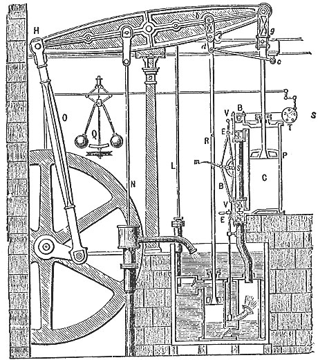
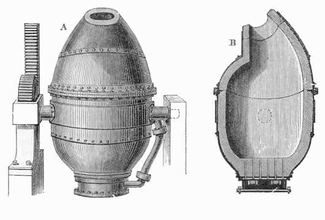
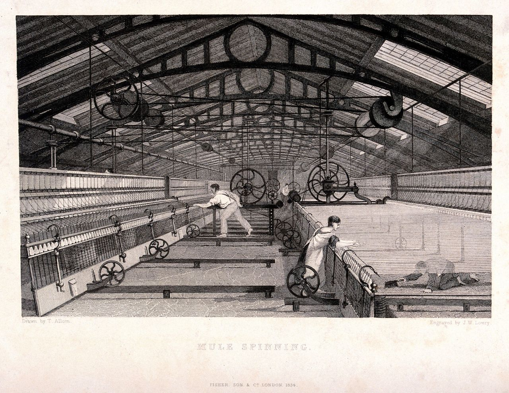
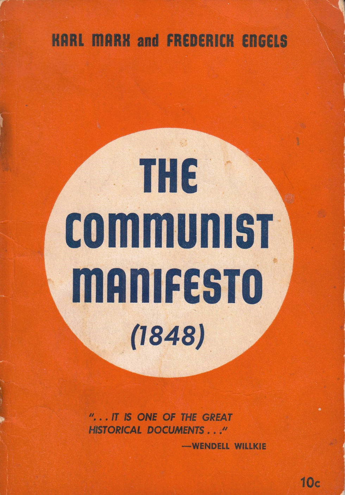
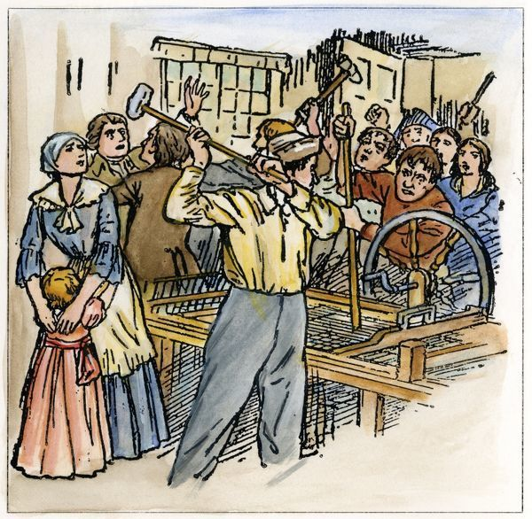
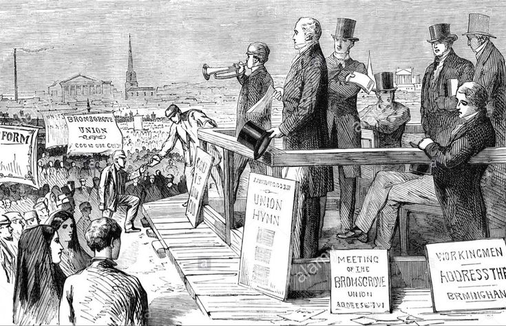
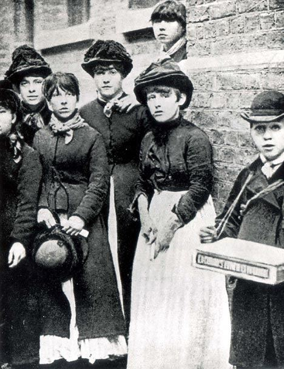
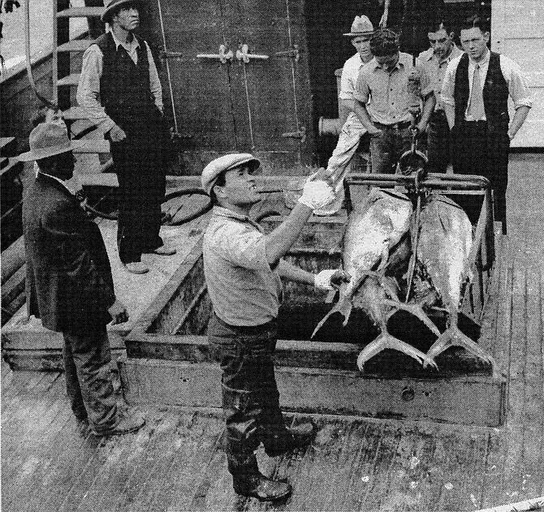
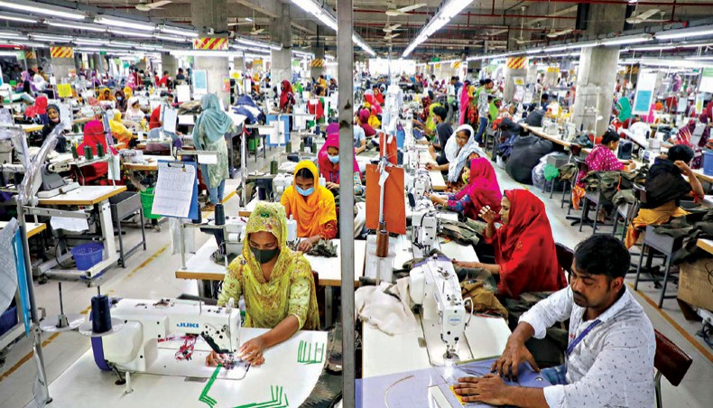

In 1810, a ten-year-old boy named Robert Blincoe arrived at a cotton mill in Litton, England. He had been sent from a London orphanage. The mill owner had paid a small fee for him. Robert worked 14 hours a day, six days a week, operating a machine that could rip off his fingers if he lost focus. He slept in a dormitory with dozens of other children. He had no wages and no way to leave.
Robert's story was not unusual. It was the story of tens of thousands of children across Britain in the early 1800s. In a single generation, a revolution had transformed how the world worked, where people lived, and who held power. It started with a machine, a loom, and a river. And it changed everything.
The Machines That Changed the World

Boulton and Watt rotative steam engine, 1788. Science Museum, London. Wikimedia Commons.
For most of human history, the power that moved work came from muscle: human arms, horse legs, or water flowing downhill. Then, in the 1760s, a Scottish instrument maker named James Watt redesigned an existing steam engine and made it dramatically more efficient. His improved steam engine could power a pump, a loom, a mill, or a locomotive. For the first time in history, humans had a power source that never got tired, could be built anywhere, and could be made stronger just by burning more fuel.
Britain industrialized first, and for a specific set of reasons. Britain had enormous coal deposits to fuel steam engines. It had rivers to power early mills and canals to move goods. It had a colonial empire that supplied cheap raw materials: especially cotton from American plantations worked by enslaved people. And it had a merchant class with capital to invest. CapitalismAn economic system where private individuals own businesses, compete for profit, and decide what to produce, rather than the government making those decisions. in Britain was well-developed; investors were ready to pour money into new machines and factories.

Bessemer converter for mass steel production, circa 1860s. Henry Bessemer's process made steel cheap enough to build railroads across continents. Wikimedia Commons.
The Industrial Revolution did not happen all at once. It moved in waves. The first wave, roughly 1760 to 1830, was driven by textiles: cotton mills using water power and then steam. The second wave, roughly 1830 to 1880, was driven by iron, steel, and railroads. In 1856, an English engineer named Henry Bessemer invented a process to mass-produce steel cheaply. Suddenly, steel was affordable enough to build thousands of miles of railroad track. Railroads knit countries together, moved goods across continents, and made fortunes for the people who owned them.
The third wave brought electricity and chemicals. In 1879, Thomas Edison demonstrated the first practical electric light bulb. Within a decade, factories that had run on steam were switching to electric motors. A French chemist named Louis Pasteur proved that germs caused disease, transforming medicine and allowing cities to grow without being wiped out by epidemics every decade. Each invention built on the last, accelerating faster than any generation before had ever experienced.
A key principle driving all of it was division of laborBreaking a job into small, simple steps so each worker does only one task repeatedly, which makes production much faster and cheaper.. Instead of one craftsman making an entire shoe from start to finish, a factory split the work: one person cut leather, another stitched, another attached the sole. Each step was fast, repetitive, and required little skill. This made goods cheaper and factories enormously productive; it also made workers easier to replace.
Today, every product you own: your phone, your clothes, your food: was made using division of labor in a global supply chain. The logic of the factory floor invented in 1780s Manchester is still the logic of manufacturing worldwide.
"I worked from five in the morning till nine at night. I had forty minutes at noon for dinner. There were about thirty-five of us children in the room. The overlooker used to thrash us... I was about eight years old when I began."
Testimony of Elizabeth Bentley, age 23, Parliamentary Committee on Child Labor, London, 1832
Elizabeth was testifying to the British Parliament about working in a flax mill as a child — her words, and hundreds of testimonies like hers, helped push Parliament to pass the Factory Acts limiting child labor starting in 1833.
1. What specific details from Elizabeth's testimony show what her daily life in the mill was like? List at least two things she describes.
2. How does this connect to our Essential Question? What does this testimony tell us about how industrialization changed how people worked?
From Farm to Factory: Life in the New Industrial Cities

Gustave Doré, Over London by Rail, 1872. Workers' housing packed tight beneath factory smoke. This engraving became one of the most reproduced images of Industrial Revolution poverty. Wikimedia Commons.
Before the Industrial Revolution, most people in Europe lived in small villages and worked the land. By 1850, for the first time in history, more than half of England's population lived in cities. This shift had a name: urbanizationThe process of people moving from farms and rural areas into cities, usually driven by the growth of factories and industry that create jobs in urban areas.. It happened faster than anything cities could handle.
Industrial cities like Manchester, Birmingham, and Liverpool exploded in population within a single generation. There was no plan. Factories went up. Workers flooded in. Landlords crammed as many people as possible into the cheapest housing they could build. A family of six might share a single room in a building without running water or sewage. Human waste ran in open gutters. Children played in streets where factory smoke turned the air gray by ten in the morning. Life expectancy in industrial Manchester in the 1840s was 28 years: the same as in medieval Europe.

Interior of a Manchester cotton mill, circa 1835. Workers, including children, operated power looms in deafening conditions for 12-14 hours a day. Wikimedia Commons.
Charles Dickens grew up poor in industrial England and never forgot it. His novels: Oliver Twist, Hard Times, A Christmas Carol: put a human face on statistics. He described workhouses where orphaned children were fed watery gruel and worked until they dropped. He described factory owners who saw workers as interchangeable parts, as replaceable as a broken gear. His writing sold millions of copies and built public pressure for reform. Literature became a political weapon.
But the cities also produced something new: a middle class. Factory managers, engineers, lawyers, doctors, and shopkeepers all filled the growing cities. They could afford decent housing, education for their children, and leisure time. The gap between this growing middle class and the desperate working poor created social tension that would eventually boil over into political movements demanding change.
The pattern of urbanization that started in 1780s England is still happening today. Right now, millions of people are moving from rural areas into cities in China, India, and sub-Saharan Africa: chasing the same promise of factory wages that drew English farm workers into Manchester 200 years ago. The conditions in those factories often look familiar too.
Three Big Ideas About Who Should Own the Machines
The Industrial Revolution created enormous wealth. It also created enormous misery. The question that dominated politics for the next 150 years was simple: who should own the factories, and who should benefit from them? Three competing ideas emerged to answer that question, and they are still competing today.
| System | Who owns the factories? | Who decides what to produce? | What happens to profits? | Key thinker |
|---|---|---|---|---|
| Capitalism | Private individuals and companies | The market: whoever buys and sells | Goes to owners and investors | Adam Smith |
| Socialism | The government or the community | The government, representing workers | Shared among workers or public services | Robert Owen, later Marx |
| Communism | The state, on behalf of all workers | A central government plan | Distributed equally; no private profit | Karl Marx, Friedrich Engels |

First edition of The Communist Manifesto by Karl Marx and Friedrich Engels, London, 1848. Wikimedia Commons.
Capitalism was the system already in place when the Industrial Revolution began. Philosopher Adam Smith had described it in his 1776 book The Wealth of Nations. He argued that when individuals compete freely in a market, seeking profit, they accidentally benefit society by producing more goods at lower prices. The "invisible hand" of the market, he argued, was more efficient than any government plan. Factory owners loved this argument; it told them their wealth was not just profitable but morally correct.
SocialismAn economic system where the government or the community owns major industries and uses profits for public benefit rather than for private individuals. emerged as a response to the suffering inside capitalist factories. Early socialists like Robert Owen, a factory owner himself, argued that workers should share ownership of the factories they worked in. Owen actually ran an experimental mill town in New Lanark, Scotland, where he paid decent wages, built schools for workers' children, and limited working hours. It was profitable. He used it to argue that treating workers well was not just humane; it was good business.
Karl Marx and Friedrich Engels pushed further. In 1848, they published The Communist Manifesto. Marx argued that capitalism would always produce misery for workers because the system was designed to extract profit from their labor. He predicted that workers would eventually revolt, seize the factories, and create a classless society with no private ownership. His ideas became the intellectual foundation for revolutions in Russia (1917), China (1949), Cuba (1959), and dozens of other countries throughout the 20th century.
Today, no country operates a pure version of any of these three systems. Most mix elements of all three: market competition plus government regulation plus public services. The argument about which mix is correct is still the central argument in every national election worldwide.
"The history of all hitherto existing society is the history of class struggles. Freeman and slave, patrician and plebeian, lord and serf, guild-master and journeyman, in a word, oppressor and oppressed, stood in constant opposition to one another."
Karl Marx and Friedrich Engels, The Communist Manifesto, 1848
Marx opened his most famous pamphlet with this claim: that the entire history of civilization is really just a long story of the powerful exploiting the powerless, and that factory workers in 1848 were simply the latest version of a struggle that had been going on since ancient times.
1. According to Marx, what has been the main conflict in human history? How does he describe the two sides?
2. How does this connect to our Essential Question? How did ideas like Marx's change what people believed about the industrial system they were living in?
Workers Fight Back: The Birth of the Labor Movement


Left: Luddites attacking a textile mill, engraving, 1812 — workers destroying machines they blamed for taking their jobs. Right: Victorian-era trade union meeting, circa 1870s — workers organizing legally for better conditions. Wikimedia Commons.
Workers did not accept factory conditions quietly. The first response was often rage. Between 1811 and 1816, a movement of English textile workers called the Luddites broke into factories at night and smashed the new power looms. They were not opposed to technology in general; they were opposed to technology being used to destroy their livelihoods without any share of the profits. The British government responded by making machine-breaking a capital offense. Several Luddites were hanged.
Destroying machines did not work. So workers tried something else: organizing. A labor unionAn organization of workers who join together to negotiate for better pay, safer conditions, and shorter hours, using their collective power as leverage against employers. is a group of workers who agree to act together. Instead of each worker negotiating alone against an employer who could simply fire them and hire someone else, a union allows all workers to demand better conditions together. If the employer refuses, the union can call a strike: everyone stops working at once, bringing the factory to a halt.

London matchgirls strike, 1888. Women workers at the Bryant and May factory struck against dangerous working conditions and low pay, winning a landmark victory for labor rights. Wikimedia Commons.
Early unions faced brutal opposition. In Britain, the Combination Acts of 1799 and 1800 made it illegal for workers to organize. In the United States, employers hired private armies to break strikes. Workers were fired, blacklisted, beaten, and sometimes killed for organizing. But the movement kept growing. By the 1880s, labor unions had won legal recognition in Britain and most of Western Europe. The eight-hour workday, the weekend, the minimum wage, workplace safety laws: all of these were union victories, won through strikes, protests, and political organizing over decades.
Women were central to the labor movement from the start. In 1888, a group of young women who made matchsticks at a factory in London went on strike over dangerous working conditions. The phosphorus they worked with caused a disease called "phossy jaw," which rotted workers' jawbones. The matchgirls won. Their victory inspired the "New Unionism" movement that organized unskilled workers for the first time.
When you have a weekend, a lunch break, or a job that is required by law to be safe, you have the labor movement to thank. Those conditions were not given to workers; they were fought for over more than a century, at enormous personal cost.

San Diego tuna cannery workers, circa 1920s-1940s. At its peak, San Diego was the tuna canning capital of the world, processing millions of cans per year under conditions that mirrored 19th-century British factories. Wikimedia Commons / Library of Congress.
By the 1920s, the waterfront of San Diego's Point Loma and Barrio Logan neighborhoods had become one of the largest industrial food-processing centers on the Pacific Coast. More than a dozen tuna canneries lined the bay. Portuguese, Japanese, Italian, and Mexican workers — many of them women and recent immigrants — stood at assembly lines cutting, packing, and sealing cans of tuna for up to twelve hours a day. The work was physically brutal: sharp knives, icy fish, chemicals from the canning process, and floors slick with blood and seawater.
By the 1940s, tuna cannery workers had organized through the United Cannery, Agricultural, Packing, and Allied Workers of America (UCAPAWA) and won significant wage and safety improvements. San Diego's cannery workers were part of the same global story told in this lesson: working people using collective action to force industrial employers to share the profits of their labor. The canneries are gone now; the neighborhood of Barrio Logan still carries their memory.
The factories of Bangladesh, Vietnam, and Indonesia today look remarkably like the factories of Manchester in 1840: long hours, low wages, dangerous conditions, workers with few legal protections, and owners far away counting profits. The debates about capitalism and labor rights that Marx and the matchgirls started are still the central arguments of the global economy. And every time you buy a product, you are connected to that argument whether you know it or not.
- Factory Fires and Labor Rights: Working Conditions in Global Supply Chains — BBC World News
- The Global Labor Movement: Workers Organizing From Amazon to Indonesia — New York Times
- Who Really Pays for Cheap Goods: The Hidden Cost of Global Manufacturing — PBS NewsHour

Garment factory workers, Bangladesh. The industrial conditions documented in this lesson are not history; they are the present reality for millions of workers making the clothes sold in stores worldwide. Wikimedia Commons.
If Robert Blincoe, the orphan who worked 14-hour days in a Litton mill in 1810, could see a garment factory in Bangladesh today, what do you think he would recognize; and what would surprise him?